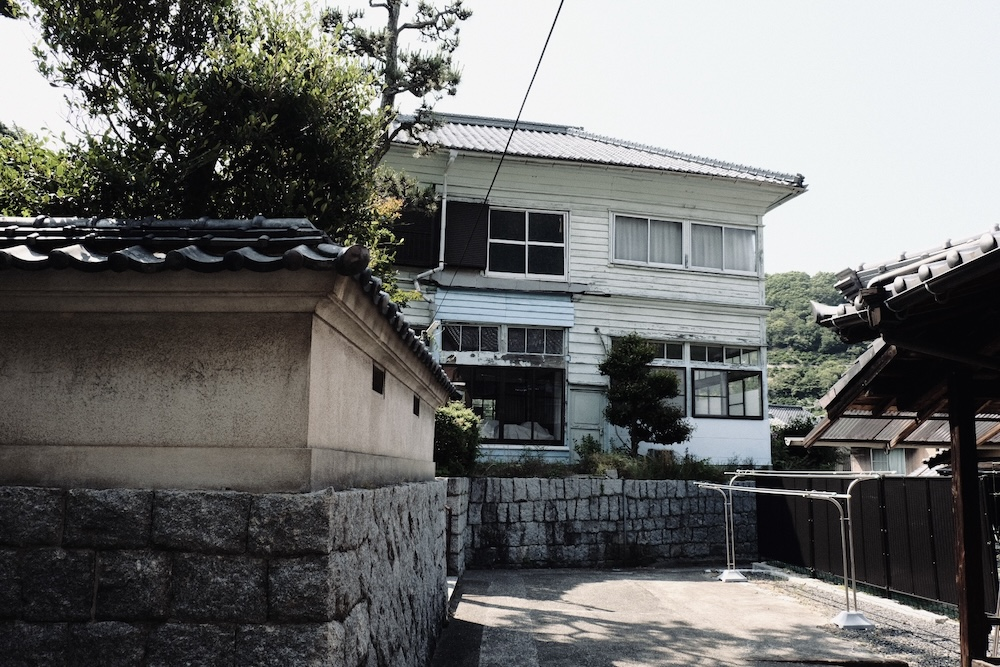
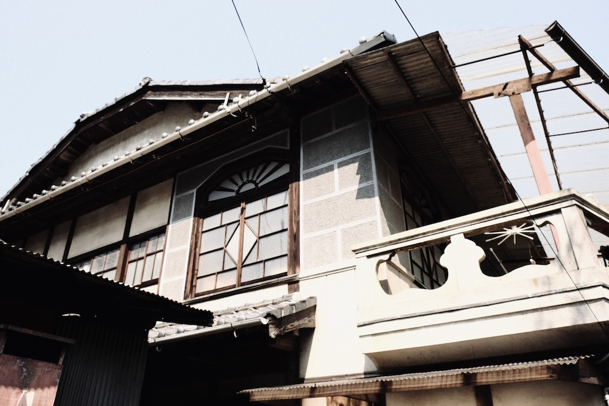
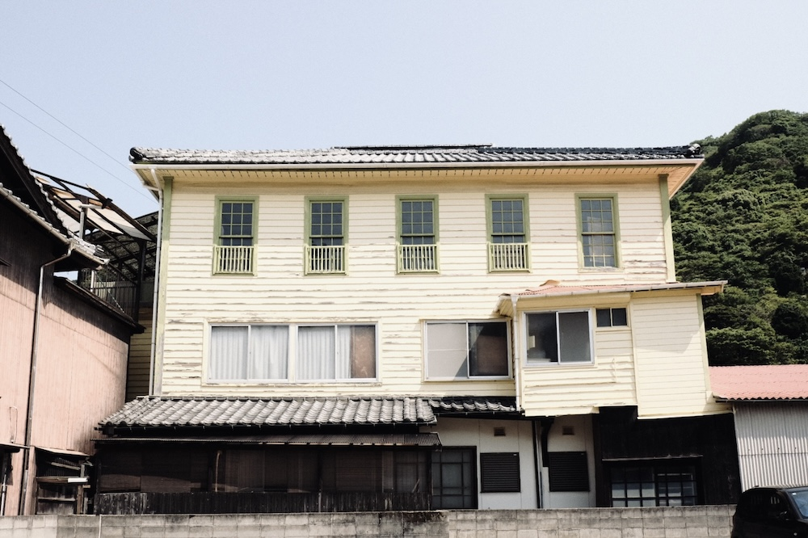
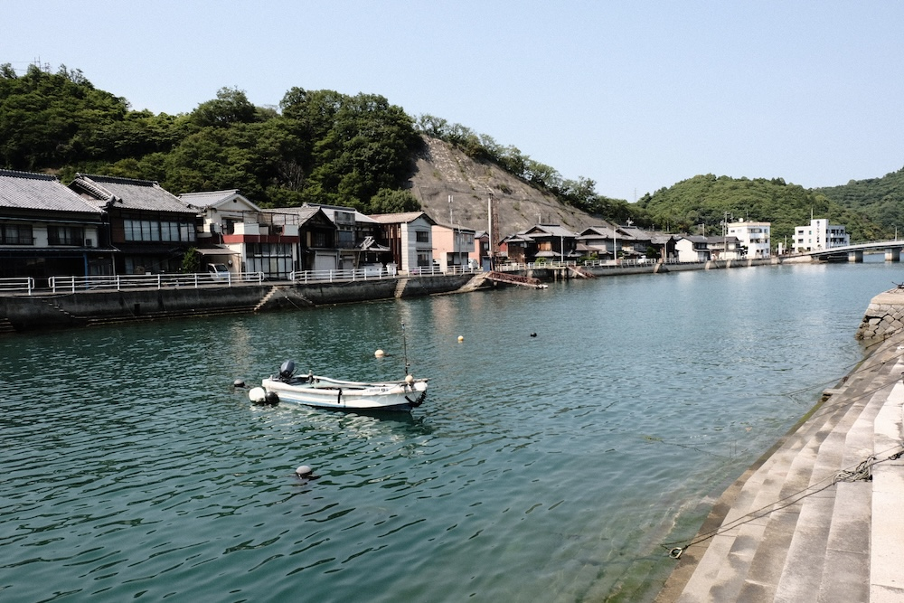
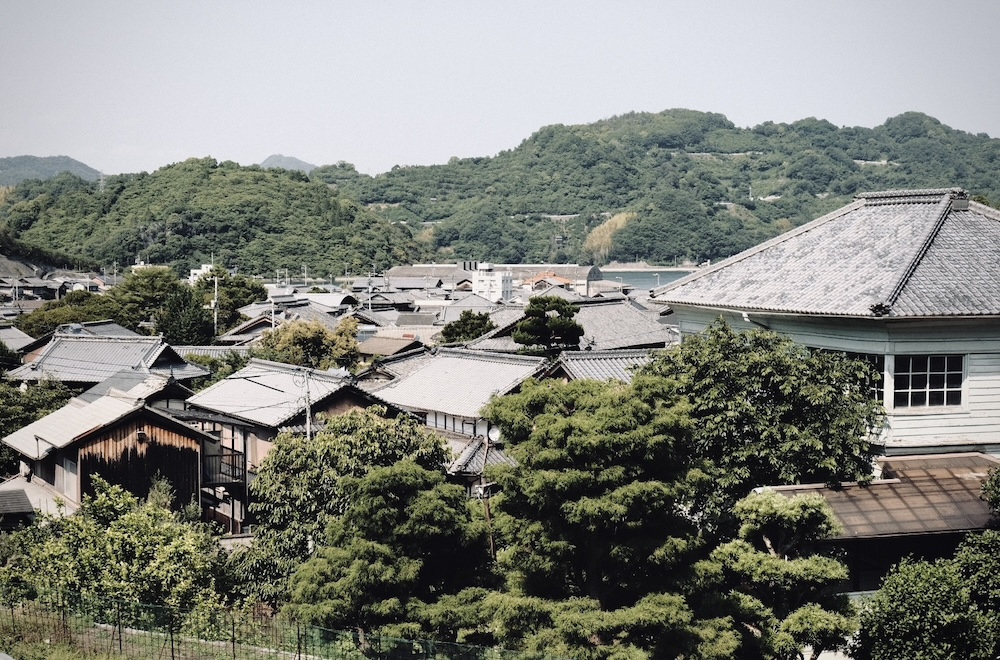
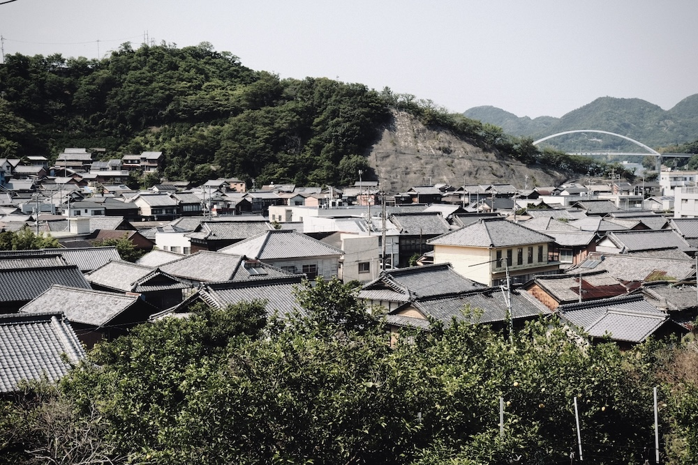
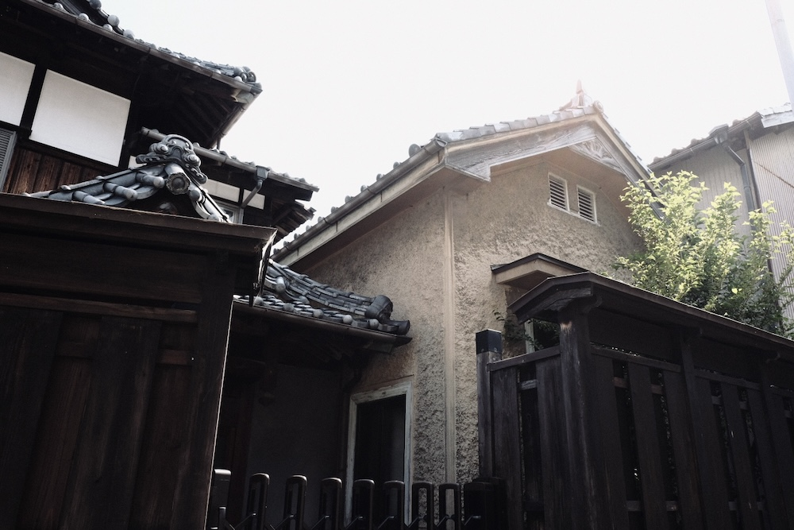
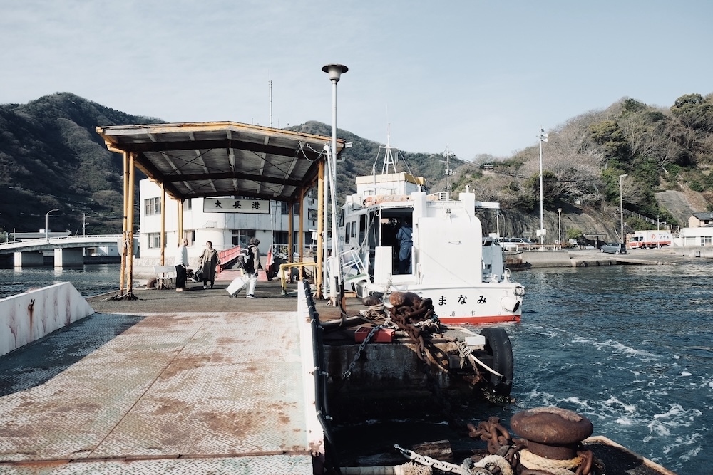
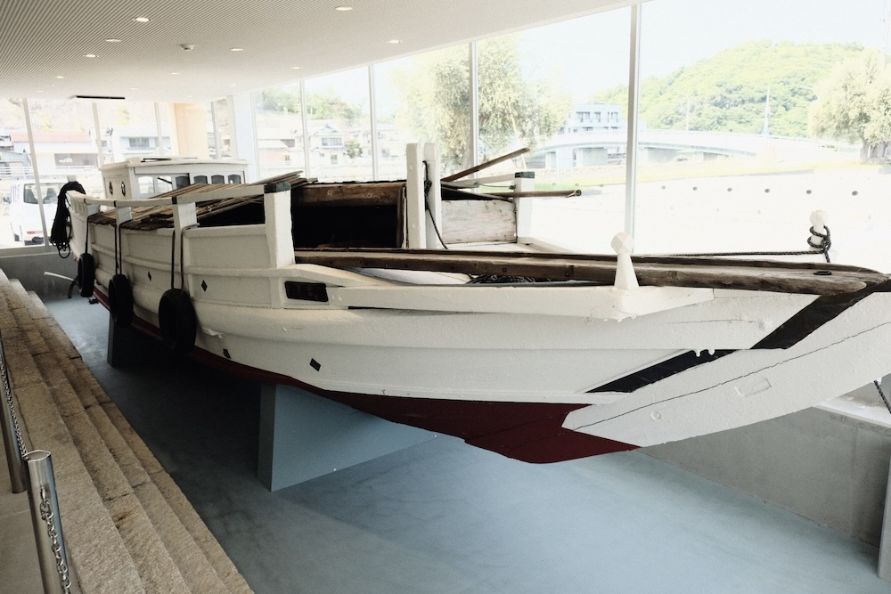

大長の風景
探訪:2025-6, 撮影:Fujifilm X-T2
大崎下島の東部、歴史的街並みで有名な「御手洗（みたらい）」の隣に位置する集落。古くから柑橘栽培で栄えた集落で、港を囲んで古い瓦屋根の集落が広がり、その背後の山斜面には幾重にも段々畑が続く。
集落には柑橘栽培で財を成した旧家が建てた「みかん御殿」と呼ばれる重厚な日本家屋や西洋館風の迎賓館が多数残るほか、町の資料館「みかんメッセージ館」には柑橘栽培についての展示、かつて集落で使われていた農業用の船舶「農船 大長丸」の展示もなされている。
瀬戸内を舞台にしたアニメ「ももへの手紙」の聖地でもある。
沖友の風景

















